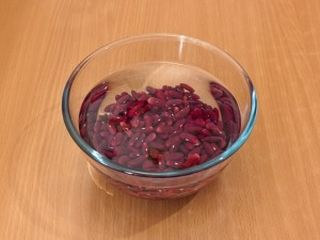
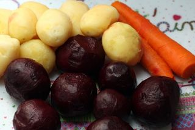
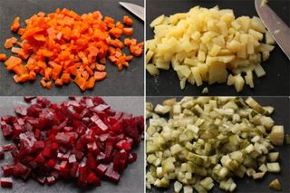
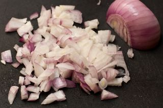
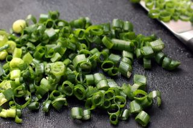
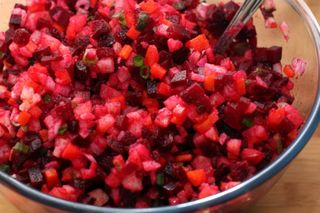
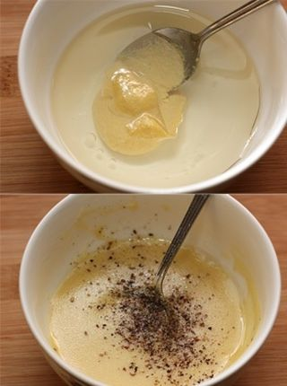
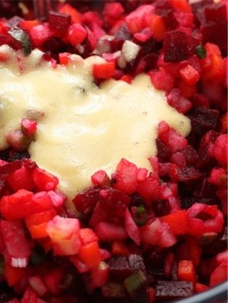

Шаг 1: Варим овощи.
Вы наверно немного удивились, увидев в составе ингредиентов уксус и горчицу. Но в этом и состоит мой секрет: дело в том, что я салат заправляю специальным соусом на основе уксуса, так как именно от него и пошло название салата в переводе с французского (vinaigre).
Итак, первым делом необходимо поставить варить овощи в мундире.
Для этого перекладываем картофель, морковь и свеклу в кастрюлю, заливаем их водой и отправляем на средний огонь вариться под крышкой.
Но перед этом обязательно их промойте под холодной проточной водой и учтите, что картофель будет готов минут через 20, морковь – через полчаса, ну а свекла будет вариться около часа в зависимости от её размера.

Фасоль лучше всего замочите на ночь в холодной воде. Но если не успели, то хотя бы на два часа оставьте её набухать, что позволит нам быстрее её сварить.
После чего переложите её в кастрюлю, залейте водой и отправьте варить на среднем огне. Как только вода закипит, убавляем огонь, солим по вкусу, прикрываем кастрюлю крышкой и готовим в течении часа-полтора.
Шаг 2: Нарезаем ингредиенты.

Готовые овощи необходимо окунуть в холодную воду минуты на 2, остудить, а потом очистить от кожуры.

Я привыкла нарезать овощи на салат мелко, так как считаю, что если действовать в обратном направлении, то они как надо не пропитаются заправкой.
Итак, остывшее овощи и огурцы (соленые, и, кстати, учтите, что количество огурцов зависит от уровня их солености, поэтому нарезайте их порциями, дабы не перестараться) мелко нарезаем кубиками и перекладываем в салатницу.

Красный лук очищаем от шелухи, зеленый – промываем под водой, и все вместе мелко шинкуем, после чего перекладываем в салатницу.

Готовую фасоль процедить и остудить. А затем добавить к остальным ингредиентам.

Шаг 3: Готовим соус.

В миску выложите горчицу с растительным маслом и уксусом. Немного поперчите, тщательно перемешайте до образования однородной массы и соус готов!
Шаг 4: Готовим винегрет с фасолью.

Заправте салат соусом, хорошо перемешайте и отправьте его в холодильник как минимум на 2 часа для того, чтобы он хорошо пропитался.